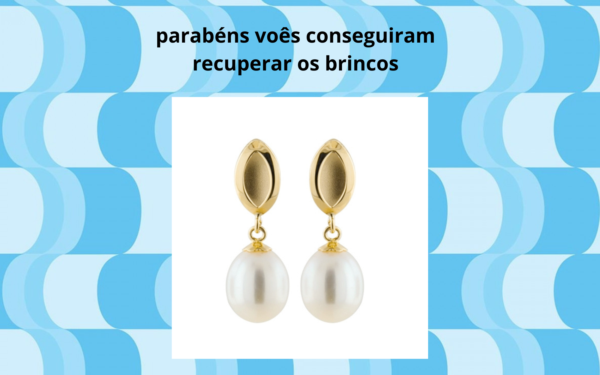

Em um dia até então normal as amigas: Maria, Camille, Mariana e Leonora, estavam aproveitando o recreio até que escutaram um grito vindo da sala da diretora, indo até lá a diretora fala que roubaram seus brincos e ela precisava deles, então as alunas decidiram que iriam achar o brinco da diretora. escolha quem você é
vocês decidem começar a procurar pela escola
vocês decidem começar a procurar pela escola
vocês decidem começar a procurar pela escola
vocês decidem começar a procurar pela escola
na bliblioteca vocês acham um livro antigo
na informática vocês acham um computador ligado com um link
vocês descobrem que os brincos eram magico e que ele esta com um grupo de magos maus no meio da Amazonas
não descobrir nada e desistir

vocês descobrem que os brincos eram magico e que ele esta com um grupo de magos maus no meio da Amazonas
não descobrir nada e desistir
chegando na Amazonas, decida por onde procurar
vocês acharam uma balsa
vocês acharam um Bug
vocês acham o grupo de magos maus
vocês se perderam
vocês perdem
vocês começam uma luta corporal, mas eles tinham varinhas magicas e vocês não conseguem continuar por muito tempo até a diretora aparecer e usa uma varinha magica para derrotar eles
a briga acaba, a diretora venceu e você entrega os brincos para ela
vocês perderam a briga